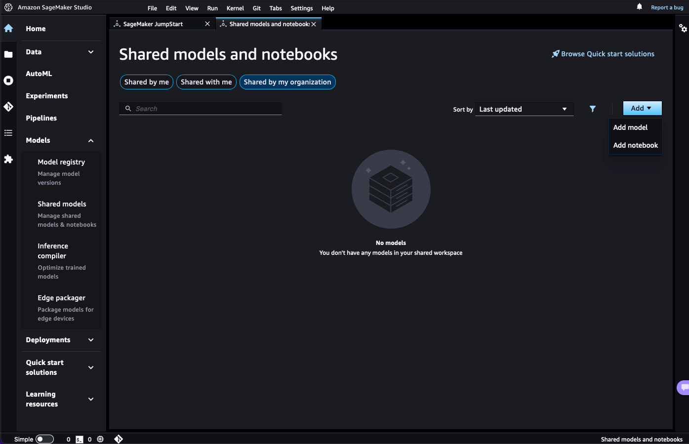

Shared Models and Notebooks
Share your models and notebooks to centralize model artifacts, facilitate discoverability, and increase the reuse of models within your organization. When sharing your models, you can provide training and inference environment information and allow collaborators to use these environments for their own training and inference jobs.
All models that you share and models that are shared with you are searchable in a centralized location directly in Amazon SageMaker Studio. For information on the onboarding steps to sign into Amazon SageMaker Studio, see Onboard to Amazon SageMaker Domain.
Access shared models and notebooks
To access your shared content, choose Shared models in the left navigation pane of the Amazon SageMaker Studio UI.
Add shared content
You can share models or notebooks through the Shared models section of the Studio UI. For details about each step, see Share models and notebooks through the Studio UI.
Filter shared content
There are three main options for filtering shared models and notebooks:
-
Shared by me – Models and notebooks that you shared to either JumpStart or SageMaker Canvas.
-
Shared with me – Models and notebooks shared with you
-
Shared by my organization – All models and notebooks that are shared to anyone in your organization
You can also sort your models and notebooks based on the time they were last updated or
by ascending or descending alphabetical order. Choose the filter (
 ) icon to further sort your
selections.
) icon to further sort your
selections.
Share tabular models with SageMaker Canvas users
In addition to sharing models with your organization, you can also share models with collaborators that use SageMaker Canvas. If you share models to SageMaker Canvas, your collaborators can import those models into SageMaker Canvas and use them to generate predictions.
Important
Important: You can only share tabular models to SageMaker Canvas.
You can filter for models and notebooks shared to and from SageMaker Canvas by selecting the filter (
 ) icon in the Shared by me or Shared with
me tabs. For more information about how to share a model to SageMaker Canvas, see Bring Your Own Model Into
Canvas.
) icon in the Shared by me or Shared with
me tabs. For more information about how to share a model to SageMaker Canvas, see Bring Your Own Model Into
Canvas.
Share models and notebooks through the Studio UI
To share models and notebooks, navigate to the Shared models section in Amazon SageMaker Studio, choose Shared by my organization, and then select the Add dropdown list. Choose to either add a model or add a notebook. 
Add a model
To add a model, choose Shared by my organization, and then select Add model from the the Add dropdown list. Enter the basic information for your model, and add any training or inference information you want to share with collaborators to train or deploy your model. After you enter all the necessary information, choose Add model in the lower right corner.
Basic information
First, add the basic descriptive information about your model. This information is used to improve the searchability of your model.
-
Add a title for this model. Adding a title automatically populates a unique identifier in the ID field based on the model title.
-
Add a description of the model.
-
Select a data type from the options: text, vision, tabular, or audio.
-
Select a machine learning task from the list of available tasks, such as image classification or text generation.
-
Select a machine learning framework.
-
Add metadata information with keywords or phrases to use when searching for a model. Use commas to separate keywords. Any spaces are automatically replaced with commas.
Enable training
When adding a model to share, you can optionally provide a training environment and allow collaborators in your organization to train the shared model.
Note
If you are adding a tabular model, you also need to specify a column format and target column to enable training. For more information, see Amazon SageMaker Canvas in the Amazon SageMaker Developer Guide.
-
Add a container to use for model training. You can select a container used for an existing training job, bring your own container in Amazon ECR, or use an Amazon SageMaker Deep Learning Container.
-
Add environment variables.
-
Provide a training script location.
-
Provide a script mode entry point.
-
Provide an Amazon S3 URI for model artifacts generated during training.
-
Provide the Amazon S3 URI to the default training dataset.
-
Provide a model output path. The model output path should be the Amazon S3 URI path for any model artifacts generated from training. SageMaker saves the model artifacts as a single compressed TAR file in Amazon S3.
-
Provide a validation dataset to use for evaluating your model during training. Validation datasets must contain the same number of columns and the same feature headers as the training dataset.
-
Turn on network isolation. Network isolation isolates the model container so that no inbound or outbound network calls can be made to or from the model container.
-
Provide training channels through which SageMaker can access your data. For example, you might specify input channels named
trainortest. For each channel, specify a channel name and a URI to the location of your data. Choose Browse to search for Amazon S3 locations. -
Provide hyperparameters. Add any hyperparameters with which collaborators should experiment during training. Provide a range of valid values for these hyperparameters. This range is used for training job hyperparameter validation. You can define ranges based on the datatype of the hyperparameter.
-
Select an instance type. We recommend a GPU instance with more memory for training with large batch sizes. For a comprehensive list of SageMaker training instances across AWS Regions, see the On-Demand Pricing table in Amazon SageMaker Pricing.
-
Provide metrics. Define metrics for a training job by specifying a name and a regular expression for each metric that your training monitors. Design the regular expressions to capture the values of metrics that your algorithm emits. For example, the metric
lossmight have the regular expression"Loss =(.*?);".
Enable deployment
When adding a model to share, you can optionally provide an inference environment in which collaborators in your organization can deploy the shared model for inference.
-
Add a container to use for inference. You can bring your own container in Amazon ECR or use an Amazon SageMaker Deep Learning Container.
-
Provide the Amazon S3 URI to an inference script. Custom inference scripts run inside your chosen container. Your inference script should include a function for model loading, and optionally functions generating predictions, and input and output processing. For more information on creating inference scripts for the framework of your choice, see Frameworks
in the SageMaker Python SDK documentation. For example, for TensorFlow, see How to implement the pre- and/or post-processing handler(s) . -
Provide an Amazon S3 URI for model artifacts. Model artifacts are the output that results from training a model, and typically consist of trained parameters, a model definition that describes how to compute inferences, and other metadata. If you trained your model in SageMaker, the model artifacts are saved as a single compressed TAR file in Amazon S3. If you trained your model outside SageMaker, you need to create this single compressed TAR file and save it in an Amazon S3 location.
-
Select an instance type. We recommend a GPU instance with more memory for training with large batch sizes. For a comprehensive list of SageMaker training instances across AWS Regions, see the On-Demand Pricing table in Amazon SageMaker Pricing
.
Add a notebook
To add a notebook, choose Shared by my organization, and then select Add notebook from the the Add dropdown list. Enter the basic information for your notebook and provide an Amazon S3 URI for the location of that notebook.
Basic information
First, add the basic descriptive information about your notebook. This information is used to improve the searchability of your notebook.
-
Add a title for this notebook. Adding a title automatically populates a unique identifier in the ID field based on the notebook title.
-
Add a description of the notebook.
-
Select a data type from the options: text, vision, tabular, or audio.
-
Select an ML task from the list of available tasks, such as image classification or text generation.
-
Select an ML framework.
-
Add metadata information with keywords or phrases to use when searching for a notebook. Use commas to separate keywords. Any spaces are automatically replaced with commas.
Add notebook
Provide an Amazon S3 URI for the location of that notebook. You can choose Browse to search through your Amazon S3 buckets for your notebook file location. After you find your notebook, copy the Amazon S3 URI, choose Cancel, and then add the Amazon S3 URI to the Notebook Location field.
After you enter all the necessary information, choose Add notebook in the lower right corner.